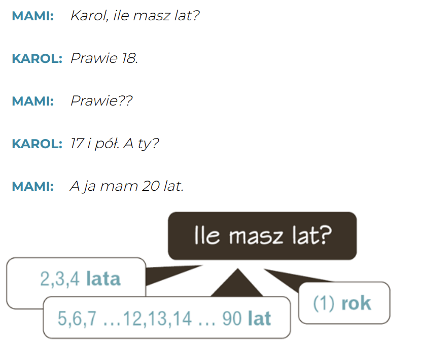
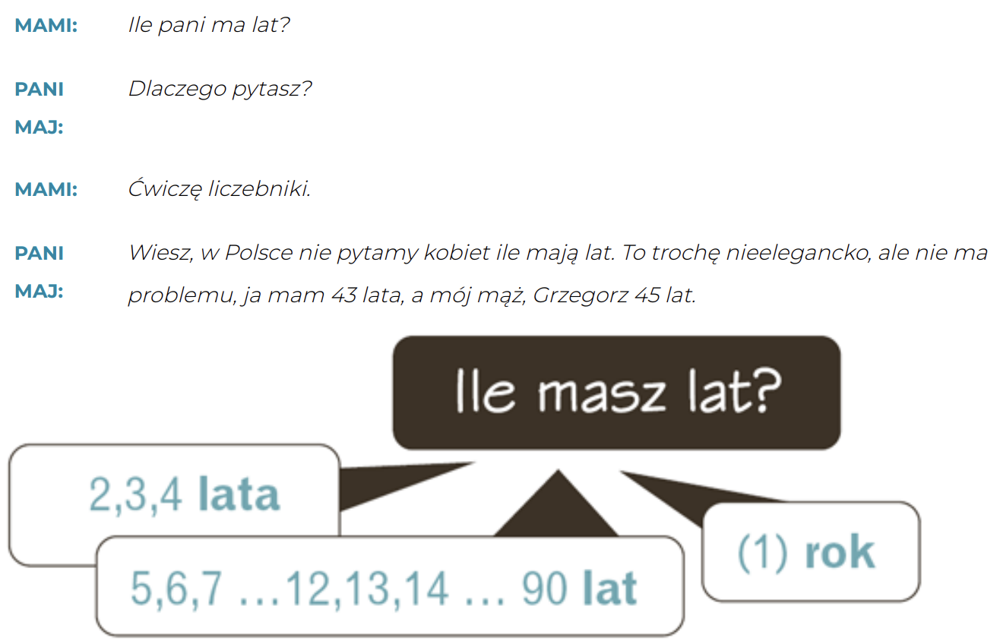

Krok Po Kroku 1
Temat 05 - Jesteś instruktorem tanga?
słownistwo >>
A. Kto to jest? Jaki on jest?
Co lubi robić? - Чем он/она любит заниматься?
Ile ma lat? - Сколько ему/ей лет?
Jaki on jest? - Какой он?
lubi pracować - любит работать
przystojny - красивый
to biznesmen - бизнесмен
🔧 Что ты любишь/хочешь/должен делать?
После глаголов lubić (любить), chcieć (хотеть), musieć (должен) второй глагол всегда идёт в инфинитиве (то есть в начальной форме).
🧩 Схема:
[глагол в форме лица] + [инфинитив]
Примеры:
- 🟢 Lubię pracować – Я люблю работать
- 🟢 Chcę czytać – Я хочу читать
- 🟢 Muszę uczyć się – Я должен учиться
📝 Примеры предложений:
- 🔸 Lubię czytać książki. – Я люблю читать книги. 📚
- 🔸 Chcę spać. – Я хочу спать. 😴
- 🔸 Musimy pracować. – Мы должны работать. 💼
B. Liczebniki 20-100
20 => dwadzieścia - двадцать
30 => trzydzieści - тридцать
40 => czterdzieści - сорок
50 => pięćdziesiąt - пятьдесят
60 => sześćdziesiąt - шестьдесят
70 => siedemdziesiąt - семьдесят
80 => osiemdziesiąt - восемьдесят
90 => dziewięćdziesiąt - девяносто
100 => sto - сто
Dialog 1
Dialog 2
🇵🇱 Как спросить о возрасте на польском?
👉 В польском языке для вопроса о возрасте используют глагол mieć (иметь):
🔹Ile masz lat? – Сколько тебе лет?
🔹 Ile ma pan / pani lat? – Сколько Вам лет? (вежливо)
✨ Как ответить на вопрос о возрасте?
Ответ всегда начинается с Mam... (У меня...):
🙊 Культурный момент
🇵🇱 В Польше не принято спрашивать женщин о возрасте!
И старайтесь не использовать слово „stary/stara” (старый) про людей. Лучше сказать:
🧓 starszy pan (пожилой господин)
👵 starsza pani (пожилая дама)
17 i pół - 17 с половиной
Ile masz lat? - Сколько тебе лет?
prawie 18 - почти 18
C. Zawody
kelner - официант
nauczyciel - учитель
fotograf - фотограф
informatyk - информатик
rolnik - фермер
muzyk - музыкант
inżynier - инженер
dentysta - стоматолог
tancerz - танцовщик
urzędnik - госслужащий
lekarz - врач
dziennikarz - журналист
emeryt - пенсионер